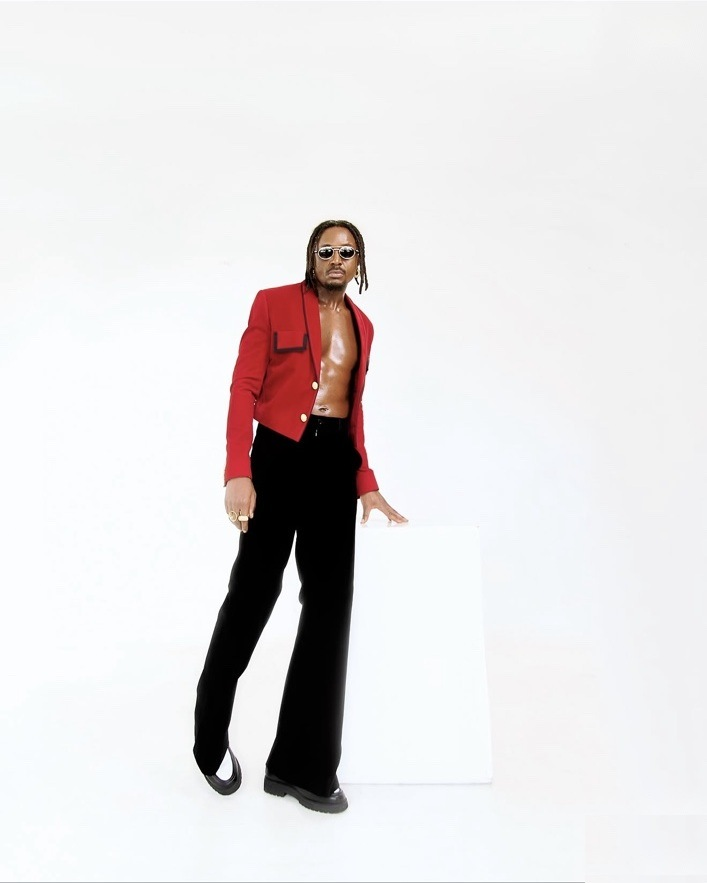

Savara: the rhythm before the spotlight
For 17 years, Delvin “Savara” Mudigi helped build the sound of Sauti Sol. Now, with the band stepping back and a solo career to call his own, he is reaching into East African folk, old rhythms and familiar stories to make something that sounds like him.
Before the solo records, the festival stages and the next chapter, there were the sounds at home. Savara’s father played reggae and Lingala; his mother took him to church. The drums came early, too, and became his first instrument. It is a useful place to begin with an artist who has spent years inside one of Kenya’s best-known bands and is now asking a different question: what does his music sound like when nobody else has to fit into it?
Savara, born Delvin Mudigi, co-founded Sauti Sol in 2005. Over the next 17 years he worked across vocals, drums and production, including as lead producer on Live and Die in Afrika, Afrikan Sauce and Midnight Train. That is not a small apprenticeship. Sauti Sol became a defining Kenyan pop group, and Savara’s work behind the scenes was part of the machinery as well as the sound.
Before the spotlightMusic started at home
The influences he describes are not limited to one lane. Reggae and Lingala sat alongside church music, and rhythm was there before the job title of “producer” arrived. That mix helps explain why Savara’s solo work has often sounded more interested in movement and texture than in staying inside a single genre.
There was already a solo record before the full break from the group. Savage Level, released in February 2022, gave him a place to put ideas that did not need to be negotiated across four voices. The album moved between upbeat tracks and more personal material, and marked an early statement that Savara had songs to make beyond Sauti Sol.
The Sauti Sol yearsMore than a band
The group’s story was never only about hit songs. Savara also co-founded Sol Generation, the label that helped launch Bensoul and Nviiri the Storyteller. Sauti Sol’s work on Burna Boy’s Twice as Tall earned the band a Grammy certificate, another reminder that the group’s reach extended well beyond its own catalogue.
Sol Fest became a yearly gathering around that world. The November 2023 edition was framed as a farewell stage before the members stepped back to pursue their own projects; the festival has since returned each December. The band’s pause did not erase what it had built. It changed what each member could do next.

Going soloThe hard part: starting over
Savara had tested solo waters with Savage Level, but doing it full-time was another matter. In an interview with OkayAfrica, he described the first year as “overwhelming”. A planned US tour tied to his 2024 project No Overthinking fell through over visa problems, forcing him to return to the drawing board and work out how to push the music himself.
That is the less glamorous side of leaving a successful group: the songs still have to find people, the shows still have to be built, and the machinery that once moved around a band has to be rebuilt around one artist. The work is different even when the experience is not new.
The soundFolk music in a new universe
Savara has described this period as his “no-rules season”. Rather than copy the dominant Afrobeats formula, he has been digging into East African folk, chants and instruments — the raw material, he says, is already here. “We’ve got the rhythms. The stories. The soul. We just need to flip how we present it,” he told Sway Africa.
It is a practical idea as much as an artistic one. Familiar sounds do not have to be treated like museum pieces, and tradition does not have to mean making music that stays in the past. The challenge is to carry those rhythms into a contemporary song without sanding away what makes them distinct. Savara’s latest work suggests he is interested in that space between recognition and surprise.
The songs“Sianda” and “Show You Off”
“Sianda” takes a Luo folk tune and the nyatiti and turns them into a song that celebrates fuller-figured women. “Show You Off” moves in another direction, speeding up konpa with zouk and Kiswahili slang. He also brought his music to one of the biggest stages in the region, performing at the CHAN 2024 final at Kasarani. In October 2025, both songs were submitted for consideration at the 68th Grammy Awards: “Sianda” for Best African Music Performance and “Show You Off” for Best Global Music Performance. Neither went on to be nominated, but for an artist only a few years into going solo, getting onto the ballot was a statement.
They make a useful pair: one starts from a recognisable folk source, the other from a dance-floor blend, and neither depends on pretending that Kenyan music has to sound like somewhere else. The point is not that every song must carry a cultural thesis. It is that Savara is increasingly choosing his ingredients rather than following a recipe handed to him.
Out nowThis is just the beginning
“I’m not trying to be the next big name. I’m trying to be the name that means something,” he told OkayAfrica. His new single, “SELE”, is out now, and it is the latest step in that plan.
It is a more specific ambition than a promise to go global. Savara is talking about what he wants to carry with him: the sounds he grew up around, the rhythms he learned to play, and the experience of building a band that travelled far. The question now is how much of that he can fit into a sound that belongs to him alone.
For now, the clearest way to follow the shift is through the music itself: start with “Sianda”, move to “Show You Off”, then listen to “SELE”. The thread between them is not a single genre. It is an artist testing how far his own sense of rhythm can take him.
Sources
- Citizen Digital: Savara gets Grammy consideration in two categories (Oct 2025)
- KenyanVibe: Savara earns Grammy consideration (Oct 2025)
- CAF: CHAN 2024 closing ceremony at Kasarani
- OkayAfrica: Savara Is Building the Soundtrack to a New Kenya (Apr 2025)
- K24 Digital: Savara on “SELE” and a difficult record deal (Oct 2026)
- Mpasho: Savara opens up about the record deal that blocked his music (Oct 2026)
- Apple Music: Savage Level album listing
- Apple Music: No Overthinking album listing
- Mdundo for Artists: Spotlight — Savara (Nov 2025)
- FAB L’Style: Savara on East African music and creativity (Sep 2026)